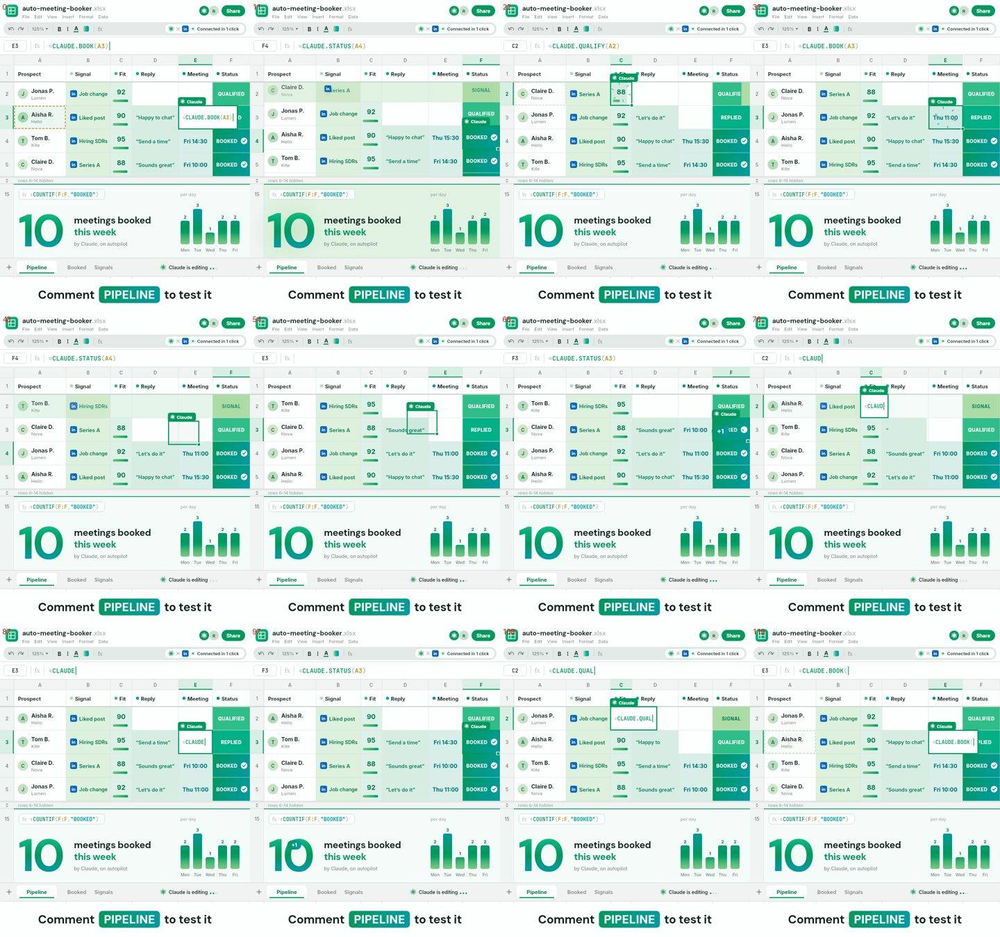

C1Carousel, 9 pagesCTA: Board Programme
A VC will not back a fintech growing 10% a year.
- Teaches
- What a VC needs to see, and why a NED should know it
- Asset
- Analyst-note carousel: editorial masthead cover, insight pages each led by a yellow highlighter-box heading, source line under a hairline; white paper, black ink, one highlighter yellow
- Sample
- AB29 · Austin Belcak · Educational Carousel · Case-study carousel · original post
- Facts
- WS-013, WS-014, BL-040, WS-701, BL-011
C3Carousel, 8 pagesCTA: Board Programme
4 blanks to fill in before a fintech raises.
- Teaches
- The investor proposition: 4 blanks to fill in before a fintech raises
- Asset
- Dark numbered carousel with italic fill-in-the-blank blocks as the device; cobalt grain ground, white type, pale blue italic blanks
- Sample
- AB41 · Austin Belcak · Educational Carousel · Checklist / list deck · original post
- Facts
- WS-015, WS-702
C2Carousel, 9 pagesCTA: Board Programme
The Board Programme, part by part.
- Teaches
- The Board Programme, part by part (promotional)
- Asset
- Part-by-part deck: cover with a vertical plum panel of line icons and a big serif title, then pages with a tilted named tab, serif headline, body and an arrowed proof element; plum and warm white
- Sample
- PC50 · Patrick James Cumming · Educational Carousel · Step-by-step framework deck · original post
- Facts
- CO-015, CO-011, WS-018, WS-020, BL-043, CO-026, WS-021, CO-027, BL-008, BL-011
S1ImageCTA: Board Programme
A fintech that is not regulated itself will probably still sit in a regulated value chain.
- Teaches
- Where does the company sit in the regulated value chain?
- Asset
- Vertical systems flowchart: four black stage bars joined by arrows, dashed side annotations, a dashed bracket naming the regulated value chain; ice-to-sage diagonal field
- Sample
- PC23 · Patrick James Cumming · Framework Infographic · Tool-stack map · original post
- Facts
- BL-033, WS-010, BL-034, WS-016
S2ImageCTA: Board Programme
Equity puts you on the cap table. Options are a promise.
- Teaches
- Equity or options for a board seat
- Asset
- Isotype comparison: two stacked panels of share icons where fill state encodes what you own (equity from day one, options vesting after a one-year cliff); wine field, ivory icons, loose line doodles behind
- Sample
- PC34 · Patrick James Cumming · Framework Infographic · Comparison graphic · original post
- Facts
- BL-042, BL-049, WS-017, WS-003, BL-701
S3ImageCTA: Board Programme
Fundamentals or narrative: the question I teach board members to ask of any fintech valuation.
- Teaches
- Fundamentals or narrative: the valuation question after the reset
- Asset
- Annotated sentence diagram: her question set in large serif, its words colour-coded and arrowed to a pill legend; warm white paper, green, brick and steel accents
- Sample
- AB07 · Austin Belcak · Framework Infographic · Framework diagram · original post
- Facts
- BL-038, BL-046, WS-012, BL-037, WS-706
S4ImageCTA: Board Programme
Silicon Valley had the technology teams. New York had the financial experts. London has both, in one city.
- Teaches
- London has both: what fintech boards value in experienced leaders
- Asset
- Magazine spread: left page with headline, bold lead-in and body, right page full-bleed colour portrait, a pull box across the foot; white page, one vermilion accent
- Sample
- PC39 · Patrick James Cumming · Framework Infographic · Framework diagram · original post
- Facts
- BL-702, BL-703, BL-002, WS-707, BL-012
A1Animated image (GIF and MP4)CTA: Board Programme
Seed to exit. 5 stops, and the board's job changes at each one.
- Teaches
- Seed to exit: what the board does at each stop
- Asset
- Serpentine route map: a walker travels a winding line through five numbered stops that light up in turn; petrol ground, dotted track, aqua route
- Sample
- AV10 · Alex Vacca · Framework Infographic · Animated Framework diagram · original post
- Facts
- WS-703, WS-704, WS-019, BL-041
A2Animated image (GIF and MP4)CTA: Board Programme
It's not enough just to grow revenue. The quality of the revenue is key.
- Teaches
- Quality of revenue: the numbers a board reads
- Asset
- Spreadsheet app window: a NED collaborator ticks ten revenue metrics row by row, the formula bar types the board's question, a summary row holds her line; white sheet, slate chrome, indigo
- Sample
- JV01 · Jessie van Breugel · Promo Graphic · Animated spreadsheet automation mockup · original post
- Facts
- BL-036, WS-012, WS-014, WS-705
